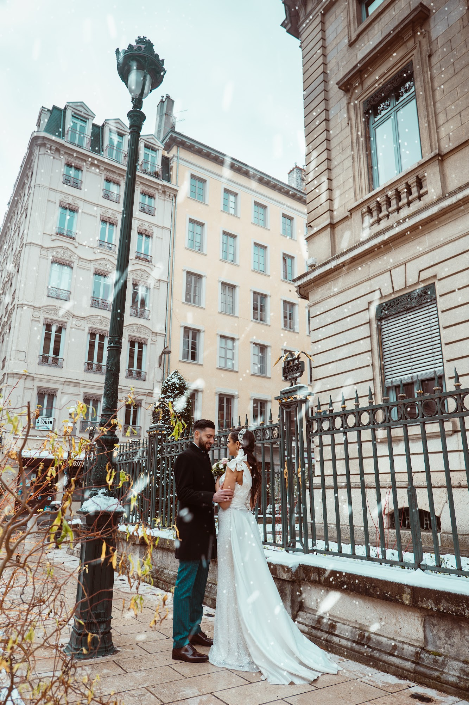
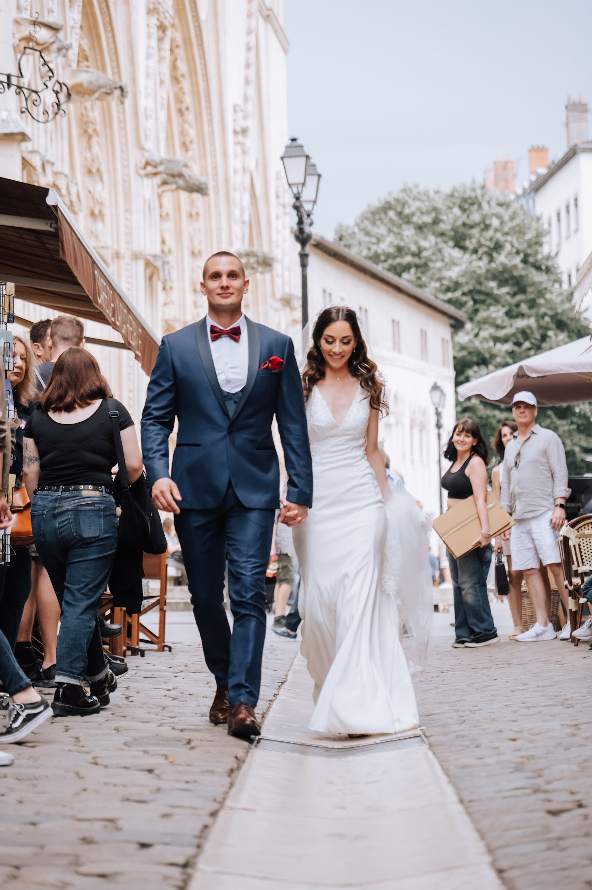
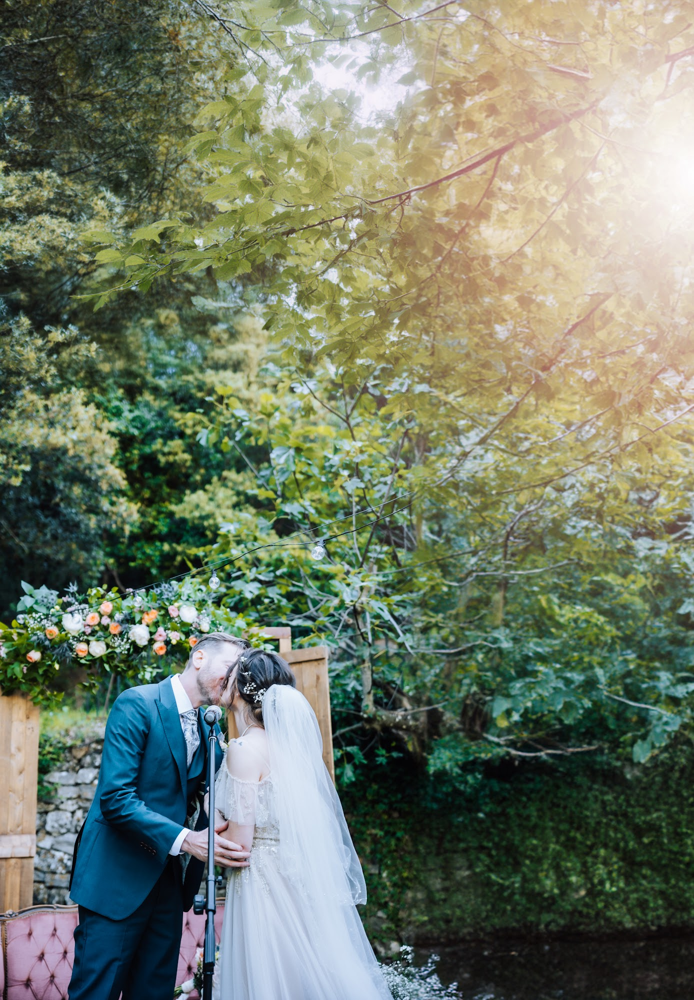
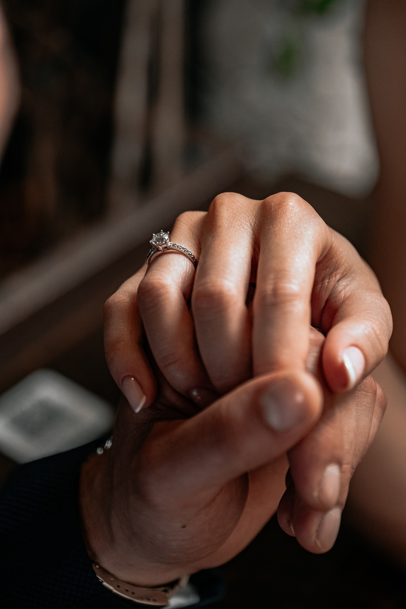

The Most Beautiful Locations for an Engagement Photoshoot in Lyon
Planning an engagement photoshoot in Lyon, France, means letting yourself be carried away by the unique atmosphere of this city. I like to see these streets as an immense playground where light sculpts the architecture and creates singular moods. I guide you to transform a simple stroll into a timeless moment, far from stiff poses. My goal is to capture your genuine connection with a sincere, editorial approach, using the urban or natural setting as a backdrop for your story.

Setting the Mood for Your Engagement Photoshoot in Lyon
Before choosing a specific location, we take the time to discuss what reflects your personalities. A successful session relies on an authentic connection and an environment where you feel completely at ease. Some couples prefer the energy of the city center, the sound of bustling cafes, and wide avenues. Others seek the quietness of a wooded park or the intimacy of a deserted cobblestone street at dawn.
My approach is to guide you subtly. I will never ask you to hold artificial postures. Instead, I suggest simple actions, like walking, talking, or embracing in a beautiful pocket of light. It is in these spaces, when you slightly forget the camera, that the natural elegance of your relationship appears. The city simply becomes a beautiful setting to highlight your unique dynamic.
The Historical Charm of Vieux-Lyon

Wandering through the paved streets of Vieux-Lyon at dawn offers a very special feeling. The ochre and pink facades catch the first rays of the sun, drawing long shadows on the ground. It is a neighborhood that requires waking up early to enjoy the silence before the city awakens. The traboules, these typical hidden passageways, provide fascinating interplays of light and shadow for more intimate portraits.
I love using these contrasts to give a cinematic dimension to your images. You walk hand in hand, the sound of your footsteps echoing against the ancient stone. I stay back, capturing an exchanged glance or a spontaneous smile. The geometry of the inner courtyards, Renaissance arches, and spiral staircases add a very strong graphic structure to the photographs.
Natural Elegance at Parc de la Tête d'Or
If you are drawn to nature, the Parc de la Tête d'Or is a vast space with many facets. The paths lined with ancient trees filter the light very softly, creating a flattering illumination. The contrast between the deep green of the vegetation and your outfits gives a very editorial feel to the pictures.
The large tropical greenhouses are also a very interesting environment to work in. Their wrought-iron and glass structure diffuses a clean, even white light. Stepping inside allows us to create images with a refined, almost timeless aesthetic. It is an ideal setting for close-up portraits, where the focus remains entirely on your expressions and the intensity of your connection.

Overlooking the City from Fourvière Hill
The Fourvière hill offers much more than its famous panoramic view over Lyon. The terraced gardens, steep paths, and ancient Roman ruins provide very interesting textures for a session. The light there is often clear, bathing the top of the hill in a bright clarity. The surrounding Gothic architecture adds a solemn and majestic touch to the shots.
We can play with perspectives, placing you under a stone arch or on a viewpoint overlooking the city's red roofs. The wind sometimes picks up at these heights, bringing movement to hair or flowing dresses. This gentle breeze brings life to the images and reinforces the spontaneous, documentary style I am constantly looking for.

Urban Energy on the Presqu'île

For a resolutely urban and fashion-forward vibe, the Presqu'île is a perfect choice. The Haussmann-style architecture, wide avenues, and the proximity of the Rhône and Saône rivers offer a dynamic backdrop. I like the idea of photographing you crossing a busy street or sitting at a table in an iconic French cafe. The city moves around you, creating a motion blur that isolates your couple in the center of the frame.
The riverbanks also allow for long walks by the water. The sun reflecting on the river creates an uplight that softens facial features. It is a relaxing environment where you take the time to breathe, watch the boats pass by, and I document these quiet moments with a strong reportage approach.
Exploring the Monts d'Or and Beaujolais

Sometimes, driving just a few kilometers away from the city center allows us to find a wilder setting. The Monts d'Or or the hills of the Beaujolais region offer golden landscapes at the end of the day. An engagement photoshoot in Lyon can easily turn into a countryside escape. The wide-open horizon lets us fully utilize the golden hour, that brief moment when the sun grazes the hills and wraps everything in a warm hue.
Running through tall grass, sitting on a dry stone wall, enjoying the absolute silence of the countryside. These open spaces encourage a great freedom of movement. I often work with prime lenses to separate your silhouettes from the background, making the landscape soft and dreamlike while keeping an absolute sharpness on your faces.
Focusing on the Delicate Details

A session is not just about wide scenic shots. The details tell an intimate part of your relationship. I pay close attention to how your hands intertwine, the movement of a designer dress, or a lock of hair tucked behind an ear. If this session celebrates a specific milestone, photographing an engagement ring or a meaningful accessory makes perfect sense.
These close-up images bring a beautiful rhythm to the final gallery I deliver. They add texture and substance. The lace of a garment, the grain of the skin, the softness of a lowered gaze. It is this combination of landscapes, full-length portraits, and close-ups that gives depth and richness to your photographic story.
Preparing for Your Moment Together
Your choice of outfits greatly influences the final look. Prioritize clothes in which you feel beautiful and comfortable. Flowing fabrics that react to the wind, neutral tones, or deep colors work incredibly well with the Lyon environment. The main goal is harmony between the two of you, without trying to wear exactly the same shades.
My final advice would be to treat this session as a real date, a suspended moment in your week. Come with a light heart. My role is to manage the light, the framing, and the environment. Yours is simply to enjoy this time together, to talk, to laugh. It is this sincerity that will make your images timeless and truly yours.
Frequently asked questions
What is the best time for an engagement photoshoot in Lyon?
I usually recommend early morning to enjoy the empty streets and the soft dawn light, or late afternoon during the golden hour for warmer, highly romantic tones.
Do we need to know how to pose for an engagement session?
Absolutely not. My approach is based on movement and natural interactions. I will guide you through simple actions to achieve elegant images without ever freezing your postures.
What happens if it rains on the day of our photoshoot?
Rain offers a very cinematic atmosphere in Lyon. We can use beautiful umbrellas, take shelter under stone arches, explore covered traboules, or shoot inside an elegant cafe on the Presqu'île.
How long does a couple portrait session last?
A session generally lasts between one and a half to two hours. This gives you time to relax, change outfits if you wish, and move between two nearby locations.
Are you looking to plan a session that truly reflects who you are? Let's connect to discuss your vision and imagine your perfect stroll through the city together.
Let’s talk about your project